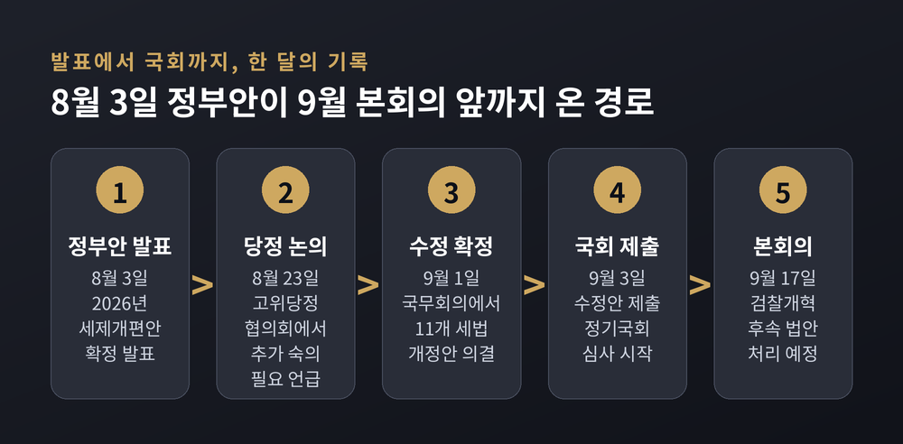
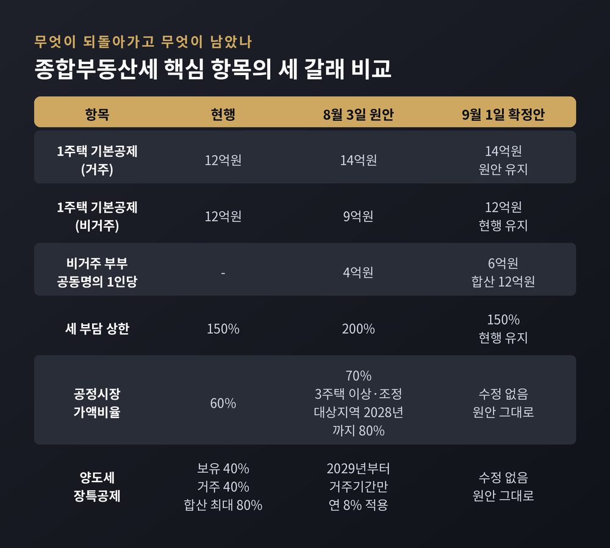
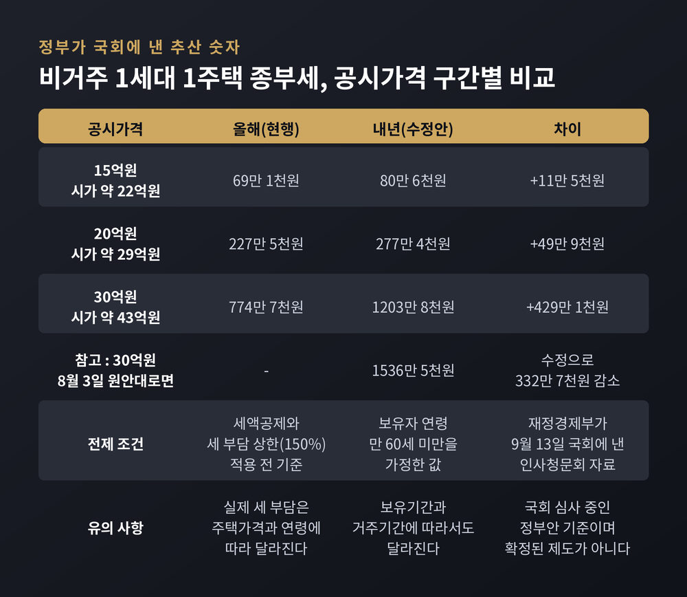
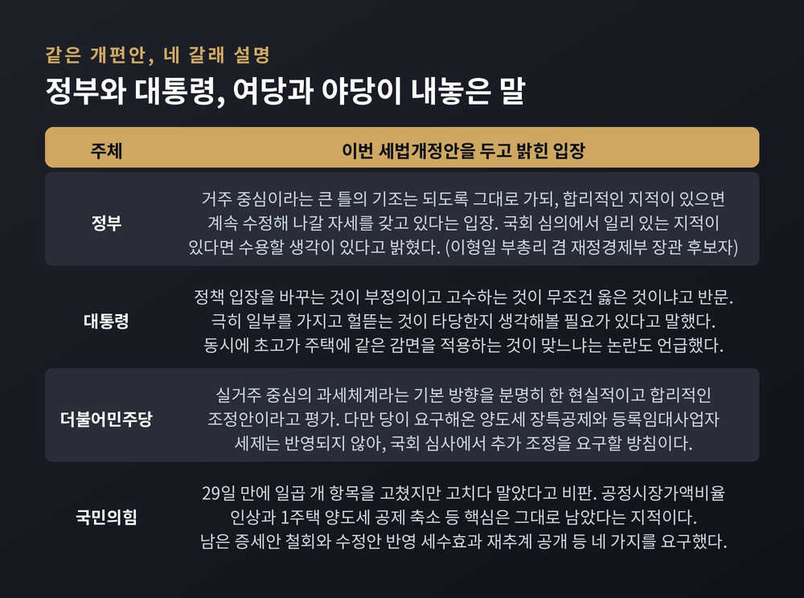
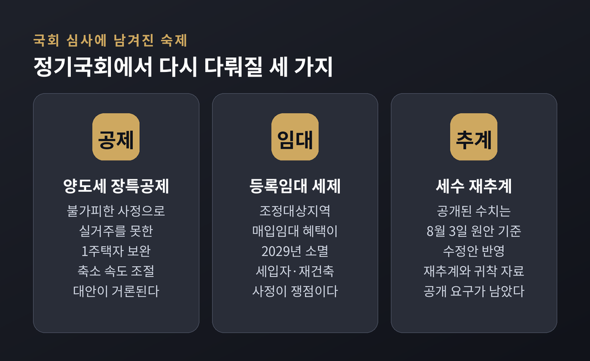

비거주 1주택 공제·세 부담 상한은 원복, 공정시장가액비율과 양도세 장특공제는 그대로 — 9월 17일 본회의를 앞둔 정기국회 쟁점 정리
이번 글에서는 2026년 세법개정안이 국회로 넘어가기까지의 과정을 정리해 보겠습니다. 8월 3일 발표된 정부안은 한 달도 지나지 않아 일부 내용이 원래대로 돌아갔습니다. 무엇이 바뀌었고 무엇이 그대로 남았는지, 여야는 어디에서 갈라서는지 차례로 짚어보겠습니다.
시간 순서로 따라가 보겠습니다.
정부는 8월 3일 2026년 세제개편안을 발표했습니다. 부동산 과세의 기준을 주택 수가 아니라 가액과 실거주 여부로 옮기겠다는 것이 골자였습니다.
이후 부처 협의와 입법예고가 이어졌습니다. 8월 23일 고위당정협의회에서 김민석 더불어민주당 대표는 비거주 1주택의 기본공제를 9억원으로 낮추고 세 부담 상한을 200%로 올리는 방안에 대해 추가적인 숙의가 필요하다는 취지의 입장을 밝혔습니다.
8월 27일 차관회의까지만 해도 원안이 통과한 것으로 알려졌습니다. 그 뒤 개각이 이뤄졌고, 원안을 고수해야 한다는 입장이었던 것으로 전해진 김용범 전 청와대 정책실장이 사표를 제출했습니다.
그리고 9월 1일, 국무회의에서 종합부동산세법과 소득세법 등 11개 세법 개정안이 확정됐습니다. 발표한 지 29일 만이었습니다. 경향신문은 입법예고 기간에 이미 발표한 정부 정책안을 이 정도로 수정한 것은 2013년 연말정산 세제 파동 이후 13년 만이라고 전했습니다.
확정안은 9월 3일 국회에 제출됐습니다.

바뀐 것과 바뀌지 않은 것을 나눠서 보시는 편이 정확합니다.
되돌아간 것부터 보겠습니다. 비거주 1세대 1주택의 종부세 기본공제는 원안에서 12억원을 9억원으로 낮추려 했으나, 확정안에서 현행 12억원을 유지하기로 했습니다. 비거주 부부 공동명의 1주택의 1인당 공제액도 원안 4억원에서 6억원으로 올라, 부부 합산 12억원이 됐습니다. 주택과 토지의 세 부담 상한 역시 현행 150%에서 200%로 올리려던 계획을 접고 150%를 유지합니다. 세 부담 상한은 직전 연도의 재산세와 종부세를 합한 총 보유세 상당액을 기준으로 계산합니다.
그대로 간 것도 있습니다. 실제 거주하는 1세대 1주택의 기본공제는 당초 정부안대로 12억원에서 14억원으로 올라갑니다. 과세표준을 계산할 때 곱하는 공정시장가액비율은 60%에서 70%로 인상되고, 3주택 이상이거나 조정대상지역 주택을 보유한 경우에는 2028년까지 80%로 단계적으로 오릅니다.
양도소득세 쪽은 손대지 않았습니다. 현재 1세대 1주택자는 보유기간과 거주기간에 따라 각각 최대 40%씩, 합해서 최대 80%의 장기보유특별공제를 받습니다. 정부안은 2028년부터 보유기간 공제 비중을 줄이고 거주기간 공제를 늘려, 2029년부터는 보유기간 공제를 없애고 거주기간에만 연 8%를 적용하도록 했습니다. 10년을 거주하면 최대 80%에 이르는 구조 자체는 남습니다.
여기에 양도차익이 큰 주택에는 거주공제 한도가 새로 생깁니다. 시가 30억원 수준을 넘는 주택에 대해 2028년에는 개인별·물건별 각각 20억원, 2029년 이후에는 각각 10억원으로 공제액이 제한됩니다. 2027년까지는 한도가 없습니다. 재정경제부는 양도차익이 50억원이나 100억원에 이르는 경우에도 최대 공제율을 그대로 적용하는 것은 과도하다는 지적을 반영했다고 설명했습니다.
부동산 밖에서도 수정이 있었습니다. 개인종합자산관리계좌(ISA)는 계약기간을 최대 5년으로 제한하고 연간 납입한도 미사용분의 이월을 막으려던 원안을 거둬들였습니다. 계약기간은 무기한으로, 이월은 허용으로 되돌아갔고 일몰기한도 두지 않기로 했습니다. 청년형 ISA와 청년미래적금의 중복가입도 허용됩니다.

이 개편의 핵심은 세율이 아니라 기준입니다.
예전에는 주택을 몇 채 가졌는지, 얼마나 오래 보유했는지가 세제 혜택의 잣대였습니다. 지금 정부안은 그 자리에 집의 가액과 실제 거주 여부를 놓습니다. 오래 보유한 것만으로는 혜택을 받기 어렵고, 실제로 그 집에 살아야 혜택이 유지되는 구조입니다.
그래서 영향의 방향이 사람마다 갈립니다. 실거주하는 1주택자는 기본공제가 14억원으로 올라 유리해지는 쪽입니다. 반대로 직장이나 학업, 가족 돌봄 같은 사정으로 자기 집에 살지 못한 1주택자는 종전 기준과 견줘 불리해질 수 있습니다. 이번에 공제가 원복되면서 그 폭은 원안보다 줄었지만, 공정시장가액비율 인상은 그대로이기 때문에 부담 자체가 사라진 것은 아닙니다.
다만 이 대목은 조심스럽게 읽어야 합니다. 개별 납세자의 세액은 공시가격과 보유자 연령, 보유·거주기간, 세액공제와 세 부담 상한 적용 여부에 따라 크게 달라집니다. 아래 숫자도 특정 조건을 가정한 정부 추산치일 뿐, 개인의 실제 고지세액과는 다릅니다.
9월 13일 재정경제부가 이형일 부총리 겸 재정경제부 장관 후보자의 인사청문회 자료로 국회에 제출한 수치가 있습니다. 국회에 낸 수정안을 적용한 결과이며, 세액공제와 세 부담 상한(150%)을 적용하기 전, 보유자 연령이 만 60세 미만인 경우를 가정했습니다.
공시가격 30억원, 시가로는 약 43억원인 비거주 1세대 1주택의 내년 종부세 산출세액은 1,203만 8,000원입니다. 현행 제도를 유지할 경우인 774만 7,000원보다 429만 1,000원 많습니다. 8월 3일 원안대로였다면 1,536만 5,000원까지 오를 예정이었으니, 이번 수정으로 원안보다 332만 7,000원이 줄어든 셈입니다.
구간을 낮춰 보면 차이는 작아집니다. 공시가격 15억원, 시가 약 22억원 주택은 69만 1,000원에서 80만 6,000원으로 오릅니다. 공시가격 20억원, 시가 약 29억원 주택은 227만 5,000원에서 277만 4,000원이 됩니다.
세수 효과는 숫자가 두 갈래로 보도됐습니다. 순액법으로 계산한 5년 누계는 3조 4,430억원 증가이고, 이 가운데 종부세가 2조 1,815억원으로 증가분의 6할을 넘습니다. 같은 개편안을 누적법으로 잡으면 13조 3,000억원 증가, 종부세는 9조 3,000억원 증가로 집계됩니다. 산출 방식이 다를 뿐 다른 개편안을 말하는 것은 아닙니다. 두 수치 모두 8월 3일 원안 기준이고, 수정안을 반영한 재추계는 아직 공개되지 않았습니다.

같은 개편안을 놓고 설명이 세 갈래로 갈립니다. 어느 쪽 평가가 옳은지는 판단하지 않고, 각자가 내놓은 말을 그대로 옮깁니다.
정부는 방향은 유지하되 조정은 열어두겠다는 입장입니다. 이형일 부총리 후보자는 거주 중심의 주택 정책이라는 큰 틀의 기조는 되도록 그대로 가면서도 합리적인 지적이 있으면 계속 수정해 나갈 자세를 갖고 있다고 밝혔습니다. 법안이 국회에서 심의될 때 일리 있는 지적이 있다면 수용할 생각이 있다고도 했습니다. 9월 11일 대정부질문에서는 양도세에 대해 징벌이 아니라 거주하는 경우 인센티브를 주는 쪽으로 바꾸겠다는 취지로 답했습니다.
이재명 대통령은 9월 2일, 수정을 후퇴로 보는 비판에 대해 정책 입장을 바꾸는 것이 부정의이고 고수하는 것이 무조건 옳은 것이냐고 반문했습니다. 더 중요한 것들은 외면한 채 극히 일부를 가지고 헐뜯는 것이 타당한지 생각해볼 필요가 있다고도 말했습니다. 동시에 이른바 '똘똘한 한 채'라는 오래 축적된 문제가 있고, 실거주 1주택이라 해서 초고가 주택에 똑같이 세금을 감면하는 것이 맞느냐는 논란이 있다고 언급했습니다.
더불어민주당은 이번 정부안을 두고 당정이 실거주 중심의 과세체계라는 기본 방향을 분명히 한 현실적이고 합리적인 조정안이라고 평가했습니다. 시장 동향을 계속 살피며 국민 의견을 수렴하겠다는 입장입니다. 다만 여당이 요구해온 양도세 장특공제와 등록임대사업자 세제는 정부 수정안에 반영되지 않았습니다. 민주당 주택시장안정화 태스크포스에서는 임대 등록 말소일로부터 2년 안에 매도하면 기존 혜택을 유지해 주거나, 자동말소 후에도 세입자 계약이 남아 매도가 어려운 경우 혜택 기간을 늘리는 방안이 거론된 바 있습니다.
국민의힘은 수정의 폭이 부족하다고 봅니다. 9월 1일 국회 재정경제기획위원회 소속 의원들은 기자회견에서 29일 만에 일곱 개 항목을 고쳤지만 "고치다 말았다"고 비판했습니다. 공제와 세 부담 상한은 원상복구했으나 공정시장가액비율 인상과 1주택 양도세 공제 축소 같은 핵심은 그대로 남겼다는 지적입니다. 남은 증세안 철회, 수정안을 반영한 세수효과 재추계 공개, 세부담 귀착 자료 공개 등 네 가지를 요구했습니다. 기재위 소속 박수영 의원은 앞서 이번 개편을 "증오의 과세", "사회주의적 과세"라고 표현했습니다. 9월 11일 대정부질문에서는 세금을 벌금처럼 썼다며 비거주 1주택자에 대한 양도세 부과를 집중 추궁했습니다. 같은 날 민주당은 서울시의 협조 지연으로 공공주택 공급이 늦어지고 있다며 공급 책임 문제를 제기했습니다.

앞으로 심사에서 부딪칠 지점은 대체로 세 갈래로 모입니다.
첫째, 양도세 장기보유특별공제입니다. 불가피한 사정으로 실거주를 못한 1주택자까지 세 부담이 급증해서는 안 된다는 의견이 꾸준히 제기됩니다. 보유기간 공제를 줄이는 속도를 조절하거나 일정 부분을 남기는 대안이 논의될 가능성이 거론됩니다.
둘째, 등록임대사업자 세제입니다. 정부안대로면 조정대상지역 매입임대 아파트의 양도세 중과 배제와 장특공제 우대가 단계적으로 줄어 2029년에는 사실상 사라집니다. 세입자가 살고 있거나 재건축·재개발로 당장 처분이 어려운 경우까지 일률적으로 혜택을 끊으면 부작용이 생길 수 있다는 우려가 나옵니다.
셋째, 세수 추계의 투명성입니다. 수정안을 반영한 재추계와 세부담 귀착 자료를 공개하라는 야당의 요구가 남아 있습니다. 한편 상장주식 평가방법 개선안은 이번 확정안에서 결론을 내지 않고, 정기국회 심사 과정에서 방안을 마련하겠다는 것이 정부 방침입니다.

한 가지는 분명히 해두는 편이 좋겠습니다. 9월 17일 본회의의 주된 안건은 세법이 아닙니다.
이날 본회의에는 10월 2일 검찰청 폐지와 중대범죄수사청·공소청 신설을 앞둔 후속 법안들이 오릅니다. 여야는 중수청법과 공소청법, 형사소송법 등을 이날 처리하기로 합의했습니다. 민주당 설명에 따르면 형사소송법 개정과 맞물려 손볼 법안이 139건인데, 100건 정도는 부칙을 고치고 39개 법률은 개별 발의해 각 상임위에서 처리하기로 했습니다. 국민의힘도 협조하기로 하면서 전면 필리버스터 가능성은 낮아졌다는 관측이 나옵니다.
세법은 소관 상임위 심사와 예산 국면을 거쳐 정기국회 후반에 결론이 납니다. 정기국회는 9월 1일 개회해 100일간 이어집니다. 대정부질문은 9월 9일부터 11일까지와 14일에 진행됐고, 국정감사는 10월 6일부터 27일까지입니다. 법안 처리 본회의는 9월 3일과 17일, 10월 1일 등에 잡혀 있습니다.
세법 논의는 예산과 함께 굴러갑니다. 정부는 내년도 예산을 총지출 821조원 규모로 편성하고 162조원 규모의 미래대응기금을 신설하기로 했습니다. 반도체 호황으로 총수입이 880조 8,000억원, 올해 본예산보다 205조 6,000억원 늘 것으로 전망했습니다. 민주당은 확장 재정이 필요하다는 입장이고, 국민의힘은 재정 건전성을 앞세워 감액을 예고했습니다. 미래대응기금은 특히 검증을 벼르는 항목으로 꼽힙니다.
여기서 한계도 인정하겠습니다. 지금 오간 수치와 일정은 모두 국회 심사 전 단계의 정부안과 예고된 계획입니다. 확정된 제도가 아닙니다. 심사 과정에서 조항이 더 바뀔 수 있고, 정부도 합리적 대안이 나오면 반영하겠다고 밝힌 상태입니다.
정리하면 이렇습니다.
29일 만의 수정은 정부 스스로도 부동산 세제의 설계가 간단치 않다는 것을 보여줬습니다. 되돌린 항목이 있고, 그대로 밀고 간 항목이 있습니다. 국회는 그 두 덩어리를 다시 들여다보게 됩니다.
"바뀐 것보다 중요한 것은, 무엇이 왜 그대로 남았는가입니다."
세법은 발표문이 아니라 조문으로 완성됩니다. 9월 17일 이후의 상임위 회의록이 이 사안의 진짜 결말을 담게 될 것입니다. 내 집에 어떤 기준이 적용되는지 궁금하시다면, 뉴스 헤드라인보다 국회에서 최종 의결될 조문을 기다려 보시길 권합니다.